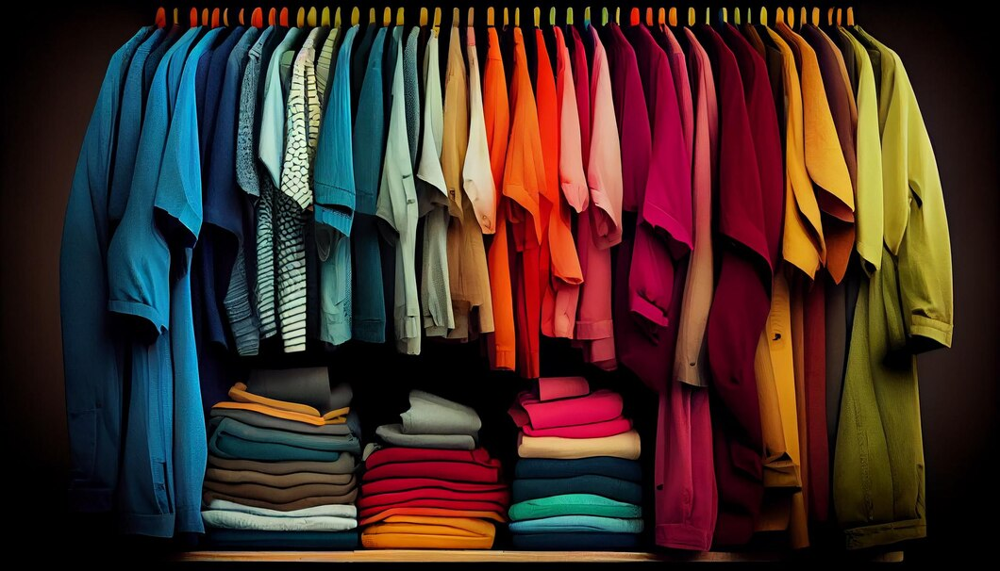
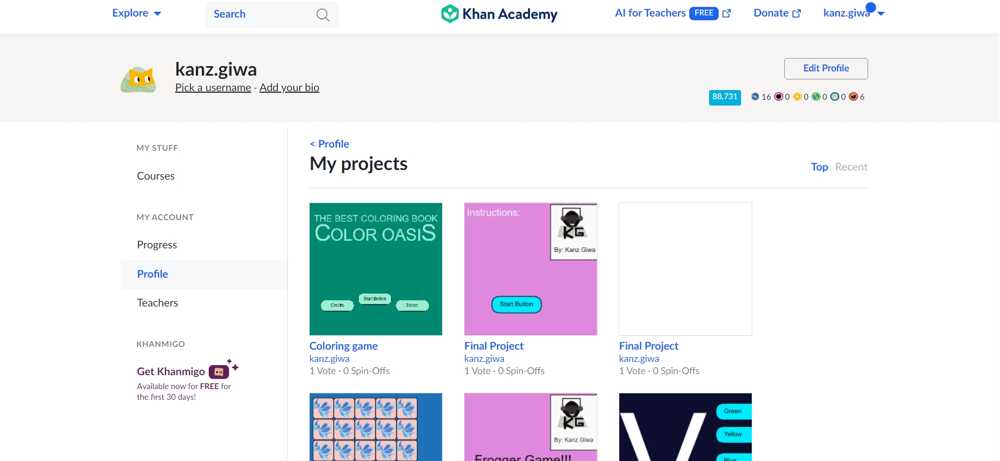
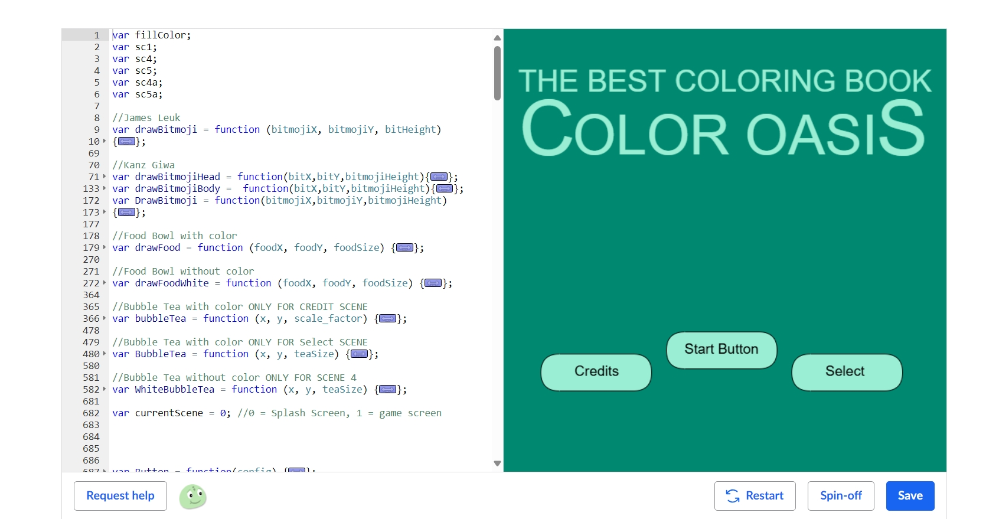

My Projects
Fuelify
View the Fuelify AppAs the Scrum Master for a team of four developers, I led the development of Fuelify, a full-stack Android application that helps users locate the lowest real-time gas prices by ZIP code. Built using FlutterFlow and Dart, the app leverages a Firebase backend with services such as Authentication, Firestore Database, Analytics, Storage, Cloud Functions, A/B Testing, Remote Config, and Test Lab, along with external API integrations. I facilitated agile ceremonies to keep the cross-functional team aligned throughout development sprints and oversaw alpha testing to identify bugs, gather user feedback, and enhance app performance prior to the beta release. Additionally, I coordinated version control using GitHub, created Product Backlog Item (PBI) cards for issue tracking, and wrote detailed user stories to guide and streamline development tasks.
GitHub Repo for FuelifyMaternal Health Risk Machine Learning Project on Google Colab
View my Machine Learning ProjectI engineered a supervised classification model using Python and Google Colab to predict maternal health risk based on 1,014 mixed-type records. Through data preprocessing, cross-validation, and hyperparameter tuning with GridSearchCV, I optimized Logistic Regression, Random Forest, and SVM algorithms, improving model accuracy by 62%. This project enabled me to identify key predictors of health risk and provide actionable insights for healthcare decision-making, deepening my ability to apply machine learning methods to real-world public health data.
Full-Stack Quiz App
View my Quiz AppThe Quiz App is a fun and easy-to-use website where people can test their knowledge on a variety of topics, like history, entertainment, science, and more. When someone opens the app, they're shown a series of multiple-choice questions. After answering all of them, they click a button to submit their answers and instantly seeing their feedback on the answers. It’s designed to be simple and engaging, making it great for casual learning, self-challenges, or just passing the time with interesting trivia.
Fullstack Baking Website for Younger Sister and friends
View the baking websiteI built a website for my younger sister and her friends, allowing users to browse a menu of sweet treats and place orders seamlessly. The website was developed using JavaScript, Python (Flask), HTML, and CSS, with Google Sheets serving as the backend database to store user orders.
To integrate Google Sheets, I used Google Cloud Console to generate a service account JSON file containing the credentials needed for authentication and authorization via the Google Sheets API. On the backend, Flask handled incoming JSON requests, extracting order details and securely saving them to Google Sheets, ensuring a smooth and efficient order management process.Clothing Descriptor Project
Clothing Descriptor GitHubClothing-Descriptor is a full-stack web application that automatically generates stylish clothing descriptions and relevant hashtags from uploaded images using deep learning. Built with a modern React frontend and a Flask backend powered by TensorFlow and MobileNetV2, the app offers users an intuitive way to upload images of clothing and instantly receive AI-generated text that captures the essence of the apparel. It provides an accessible interface for fashion content creators, marketers, or developers looking to explore computer vision in the fashion industry. With features like real-time image processing, smart hashtag generation, and a clean UI, Clothing-Descriptor bridges the gap between AI and fashion in an engaging, user-friendly experience.
Mood Tracker App
View my Mood Tracker AppThe mood tracker app is a user-friendly mobile application designed to help individuals monitor and reflect on their emotional well-being over time. Built using Dart and Flutter, the app allows users to log their daily moods by selecting how they feel and answering simple questions about their daily experiences. The interface includes game-like elements to keep users engaged, and at the end of each week, the app generates personalized reports to help users identify emotional patterns. It also offers general advice based on user input, aiming to promote self-awareness and mental wellness through consistent mood tracking.
Research Paper: The Impact of Social Media Algorithms on Society
I wrote a 5000 word research paper to explore the influence of social media algorithms on public discourse, mental health, and democratic values.
It focuses on three major areas: misinformation and echo chambers, mental health effects, and ethical concerns surrounding algorithmic bias.
TV Show Data
View the Python programThis program allows users to analyze TV show data including finding shows with specific ratings, finding the highest-rated show in a range of years, searching for shows by title, computing the average score of shows with a specific rating, finding shows with higher scores than a given show, and sorting all lists by year and writing the result to a file.
JavaScript Projects on Khan Academy
View my Khan Academy ProjectsI created multiple JavaScript side projects on Khan Academy, including games like Memory, Tic-Tac-Toe, Dice Game, and many more.
Coloring Game
Play the Coloring GameThis JavaScript-based coloring game allows users to choose different pages and colors to create fun artwork.
